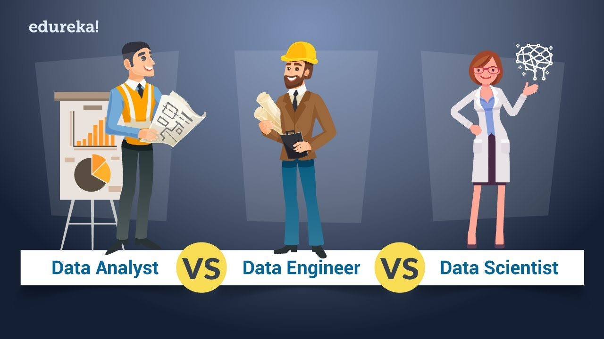
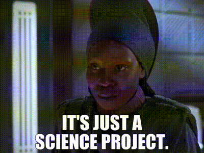

Fullscreen mode
Just press »F« on your keyboard to show your presentation in fullscreen mode. Press the »ESC« key to exit fullscreen mode.
Overview mode
Press "Esc" or "o" keys to toggle the overview mode on and off. While you're in this mode, you can still navigate between slides, as if you were at 1,000 feet above your presentation.
Python for Data Scientist.
Intro
Lesson 1
Who are Data Scientists?
Data Engineer vs Data Scientist vs Data Analyst
What the difference???
1. Data Engineer
.gif)
Role: Builds and maintains the infrastructure and architecture for data generation, storage, and processing.
1. Data Engineer
Responsibilities:- Develops data pipelines to ensure data flow between systems.
- Designs, constructs, and manages databases and data warehouses.
- Works with big data frameworks like Hadoop or Spark.
- Optimizes data systems for scalability and performance.
- Ensures data reliability and handles ETL (Extract, Transform, Load) processes.
1. Data Engineer
Skills Needed:- Programming: Python, Java, Scala, SQL.
- Tools: Spark, Kafka, Airflow, Hadoop, AWS/GCP/Azure.
- Databases: SQL, NoSQL (e.g., MongoDB, Cassandra).
- Focus: Backend development and data architecture.
1. Data Engineer

2. Data Scientist

Role: Analyzes and models data to extract insights, build predictive models, and solve business problems.
2. Data Scientist
Responsibilities:- Builds machine learning models for prediction and classification.
- Performs statistical analysis and identifies patterns in data.
- Communicates insights through visualizations and storytelling.
- Works on advanced topics like deep learning or NLP (Natural Language Processing).
- Collaborates with business teams to define problems and present solutions.
2. Data Scientist
Skills Needed:- Programming: Python, R, SQL.
- Statistics & Math: Probability, linear algebra, calculus.
- Machine Learning: TensorFlow, PyTorch, Scikit-learn.
- Tools: Jupyter, Tableau, Power BI, cloud platforms.
- Focus: Advanced analytics, data modeling, and algorithms.
2. Data Scientist
3. Data Analyst
Role: Interprets data to provide actionable insights, focusing on reporting and decision support.
3. Data Analyst
Responsibilities:- Generates reports and dashboards to track KPIs.
- Cleans and preprocesses data for analysis.
- Provides insights to support business decisions.
- Works on exploratory data analysis to identify trends and anomalies.
- Frequently collaborates with business units to refine strategies.
3. Data Analyst
Skills Needed:- Programming: SQL, Python (basic), Excel.
- Data Visualization: Tableau, Power BI, Excel charts.
- Statistics: Descriptive stats, hypothesis testing.
- Tools: Google Analytics, CRM platforms.
- Focus: Business insights and operational efficiency.
3. Data Analyst

Difference
A data engineer is responsible for the creation and maintenance of data pipelines while data analysts primarily perform tasks that have an impact on the company's scope.A data scientist's job is to extract future insights from raw data.
Who Fits Each Role?
- Data Engineer: If you enjoy coding, databases, and optimizing infrastructure.
- Data Scientist: If you love math, modeling, and solving abstract problems.
- Data Analyst: If you prefer interpreting data and providing actionable recommendations.
| Aspect | Data Engineer | Data Scientist | Data Analyst |
|---|---|---|---|
| Main Goal | Build infrastructure | Create predictive models | Analyze and visualize data |
| Key Tools | Spark, Hadoop, Airflow | Python, TensorFlow | Excel, Tableau |
| Focus | Data pipelines & systems | Algorithms & predictions | Business decision support |
| Output | Usable, scalable data | Insights and models | Dashboards and reports |
| Complexity | System-level problems | Statistical/algorithmic | Interpretative/business |
Shortly:
- Data Engineer: How to collect data
- Data Scientist: How to predict, operate, calculate
- Data Analyst: How to sell
Links: